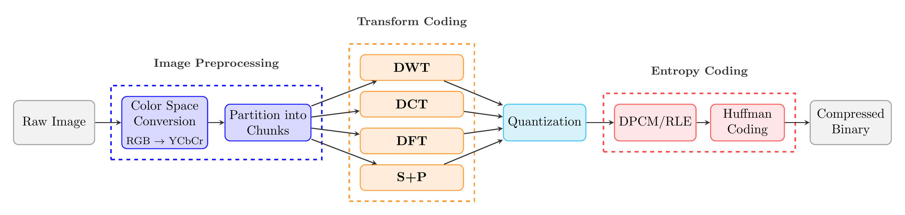

Project Overview
As filesizes continue to increase, efficient compression algorithms become critical for transmitting
and storing large amounts of information. Images are essential across the web, and as display
resolutions increase, the demand for higher-quality images grows—making compression even more
necessary to manage storage and bandwidth.
Data compression represents data in a form that occupies less space than the raw data. There are two
types: lossless compression (e.g., .zip and .tar files) preserves all information
exactly, while lossy compression permanently alters the data to achieve higher
compression ratios. In image compression, lossy methods aim to discard information that is least
perceptible to humans, maintaining visual quality while reducing file size.
One of the most widely used image compression standards is the JPEG Compression
Standard, which has been in use for over 30 years. Our project explores JPEG
compression by investigating the role of transform coding—a crucial component of
the compression process.
Our Compression Pipeline
We implemented a JPEG-style compression pipeline to systematically test different transform coding
methods. The pipeline follows these stages:
- Color Space Conversion: We convert raw RGB images into YCbCr color space, where
luminance (Y) is separated from chrominance (Cb, Cr). This concentrates most visually important
information into a single channel, making compression more effective.
- Block Partitioning: Images are partitioned into blocks according to the
specific transform being used (e.g., 8×8 blocks for DCT/DFT, or full-image tiles for Haar and
S+P).
- Transform Coding: This is the core of our investigation. We substitute one of
four transforms—DCT (Discrete Cosine Transform), DFT (Discrete Fourier
Transform), Haar Wavelet Transform, or S+P
Transform—while keeping all other stages unchanged. Each transform converts spatial
pixel values into a domain where redundancy is more explicit. DCT and DFT concentrate energy
into low-frequency coefficients, while Haar and S+P build multiresolution decompositions.
- Quantization: The transformed coefficients undergo quantization, the primary
source of loss in the pipeline. Quantization reduces precision by mapping ranges of coefficient
values to single representative values, discarding many small coefficients with limited
perceptual impact. This stage is where transform quality directly affects compression
efficiency.
- Entropy Coding: The quantized coefficients are compressed using lossless
methods including DPCM (Differential Pulse Code Modulation), run-length encoding, and Huffman
coding. These operations convert long runs of similar values into compact binary
representations.
By keeping all pipeline components fixed except the transform stage, we can isolate and measure how
each transform influences compression ratio, entropy, and reconstruction quality across different
datasets.
Compression Pipeline
